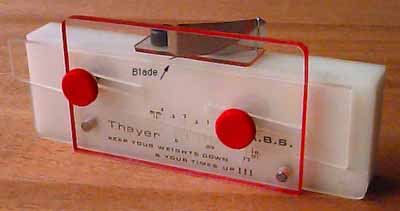

|
Jim Jones ceased production of his original version of this fine tool in early 2003 (below), and gave approval for Tim Goldstein to offer the updated version show above through A2Z CNC. This new version was CNC machined from aluminum billet and acrylic. It is simple to use and offers all the precision of the original. By sliding the upper diagonal plate back and forth, different thicknesses can be easily set with great accuracy. This tool should last several lifetimes, so be sure to encourage younger family members to follow in your footsteps. Unfortunately, Tim has ceased production as well. Still, it wouldn't take too much to replicate the concept at home with a few basic tools. You could calibrate the scale with careful measuring. A cheap pair of calipers or dial indicator would be more than precise enough if you have them available.  |
Copyright 1998-2020,Thayer Syme. All rights reserved